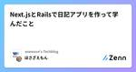

wwwave's Techblogのフィード
https://zenn.dev/p/wwwave
株式会社ウェイブのエンジニアによるテックブログです。 弊社では、電子コミック、アニメ配信などのエンタメコンテンツを自社開発で運営しております！ https://wwwave.jp/service/
フィード

Next.jsとRailsで日記アプリを作って学んだこと 1
1
wwwave's Techblogのフィード
はじめに大相撲5月場所、楽しみですねはじめまして、株式会社ウェイブでエンジニアをしているほさざえもんです普段業務で使っているNext.jsとRailsで0からプロダクトを作った経験がなかったので日記アプリを個人開発しました実装したコードはこちら 👉 GitHub開発期間は4週間くらいでした個人開発を通して学んだことやハマったところについて振り返りたいと思います！ きっかけ自分は今まで競プロやCTFの経験はあるものの、Web開発に関しては道筋のあるハンズオンに取り組む程度で0から考えて何かを作った経験がありませんでしたエンジニアたるもの、何かしらの0から開発する経...
5日前
値オブジェクト 所感
wwwave's Techblogのフィード
はじめにちいかわ、ハチワレ、誕生日おめでとう。現在、私はドメイン駆動設計（DDD）を取り入れているプロジェクトに携わっています。DDDに触れるのは今回が初めてで、集約やエンティティ、値オブジェクトといった“戦術的設計”の要素も、これまで扱ったことがありませんでした。実装を始めてから約3ヶ月。試行錯誤しながらも、少しずつ手応えを感じられるようになってきました。その中でも特に「これは良いな」と実感したのが、値オブジェクトです。この記事では、値オブジェクトを使っていて感じたことや気づきを、現時点でのメモとしてまとめておこうと思います。同じようにDDDを学びはじめた方の参考にな...
13日前

CloudFrontのLambdaで特定パスのIP制限を行う話
wwwave's Techblogのフィード
まえがきはじめまして！株式会社ウェイブで国内向けのコミック配信サイト ComicFesta の開発をしてるぴらふです。 今回やりたいことCloudFrontに付随するLambdaを使ってパスの制御をしていたのですが、新たに試験フェーズのパスを追加することになりました。ただし、このパスは社内の特定のユーザーしか閲覧できない状態にする必要がありました。「IP制限をかけられないか？」という話になり、CloudFrontのLambda@Edgeで対応できそうだったので実装してみました。 CloudFrontのLambda@EdgeでIP制限今回制限をかけたいパスは hoge/...
1ヶ月前
【どきどき】NewWWWaver新卒エンジニアが１年後どうなったか？
wwwave's Techblogのフィード
2025年度を目前に控え、2024年度新卒エンジニアSさんにお話を伺いました。ウェイブに入社して１年でどのように成長したのか？を振り返ります！＊同じくウェイブ新卒シリーズの１日密着はこちら-> https://zenn.dev/wwwave/articles/5773f59f9d8015 2024年4月どきどきの入社 4年制大学文系学部をギリギリで卒業し、社会人としてやっていけるか不安〜〜という状態でした。こんな感じです。↓↓ 2024年4月〜9月 新卒OJT期間 入社後６ヶ月間OJTで研修があります。毎月目標をたて、週１回OJTの先輩との1 on 1 で行動を振...
1ヶ月前
Jiraダッシュボードを個人の学習の可視化に使ってみよう
wwwave's Techblogのフィード
はじめに株式会社ウェイブでエンジニアをしている布施です。現在、エンジニアの育成や自己学習の推進のための施策を検討しています。アプローチとしては普段の業務の中での学びに注目するOn-JTと、ワークショップなど業務から離れた学びに注目するOff-JTの観点で考えていますが、この記事にはOn-JTの取り組みについて書きます。On-JTで何か作業を追加して学習する機会を作る前に、意識していないだけですでに業務中に学びが得られているケースはあるはずだという仮説のもと、業務実績のデータをもとに学びを可視化する方法を考えています。メンバーが可視化された自分の学びを見て、学習のモチ...
2ヶ月前
平凡なエンジニアがインフラやるだってぇ？
wwwave's Techblogのフィード
まえがきはじめまして！株式会社ウェイブで国内向けのコミック配信サイト ComicFesta の開発をしてるぴらふです。インフラ奮闘記です。 そもそもの話前述した通り自分はインフラが大っ嫌いでした。なぜかというと- 目に見えない- 単語が多い- AWSって何それ研修受けたけど全く理解できない- 別に僕がやらなくてもいいといった理由で嫌いでした。まぁウェイブに入る前の前職はSi系だったのでそんなところに触れる機会もなかったですし、、そういうただのアプリ屋さんだった自分が大っ嫌いなインフラ(主にAWS)どう立ち向かって今に至るかを拙い文章ですが、書き記してみましたの...
2ヶ月前
git コミット整理術
wwwave's Techblogのフィード
はじめに最近commit amendやらrebase -iやらの使い方を知りました。遅すぎました。愚かなコミットログを残してきた過去の自分への禊としてこの記事を書きます。 利用するコマンドgit commit --amend --no-edit1つ前のコミットに差分を入れる。--no-editでコミットメッセージを変えない。git push --force-with-leaselocalでコミットの内容を編集した時にとりあえず使う。force-with-leaseは対象ファイルのremoteの最新コミットが更新されている場合に失敗してくれる。git ...
3ヶ月前
新卒のSさんが作ったアプリで遊んでみた
wwwave's Techblogのフィード
こんにちは！ 株式会社ウェイブ でエンジニアをしている うちやんま です。今回は、新卒のSさんが研修で作った某回転寿司のガチャアプリ を使って、みんなでお寿司を食べに行ってみました！アプリについてはこちらの記事で少し触れているものです ガチャで決まるお寿司！この「お寿司ガチャ」、好きなものを選ぶ自由はありません！ガチャの結果こそが 絶対ルール。出たものしか食べられない…もちろん、アイスコーヒー & ホットコーヒーを同時に引き当てる事故 も起こります。(画像: コーヒー2杯に絶望する新卒Sさん)自分が作ったアプリに苦しめられるこの体験で、彼はユーザー体験につ...
3ヶ月前
プロダクト開発とROI
wwwave's Techblogのフィード
まえおき株式会社ウェイブで海外向けコミック配信サイト Coolmic のエンジニアをしている肥沼です。最近、プロダクト開発ってなんなんだろう？どうやって進めるんだろう？何を考えてばいいんだろう？と考えることが多く色々調べ回ってます。調べてくとプロダクト開発におけるROIの考え方にたどり着いたのでサクッとまとめたいと思います。!完全に個人的な解釈です。一番納得の入った考え方です。参考程度に！ プロダクト開発における考えるべきROI そもそもROIとはROIとはROIとは「Return On Investment」の略で、投じた費用に対して、どれだけの利益を上げ...
3ヶ月前
エンジニアの成長を支える技術
wwwave's Techblogのフィード
株式会社ウェイブのプロダクトエンジニアリング部で副部長を努めている内田です。 どんな会社？株式会社ウェイブは、電子コミック出版を軸に、人気作の単行本化・アニメ化といったメディアミックスや、ComicFesta, AnimeFesta, Coolmicなどの電子コミック・アニメ配信のプラットフォーム事業を展開しています。さらに、新たなエンタメの領域にも挑戦を続けており、年に1〜2つのペースで新規サービスも立ち上げている組織です。 どんな部署？プロダクトエンジニアリング部は、ComicFesta, AnimeFesta, Coolmicなどのプロダクトをエンジニアリング面で担当...
5ヶ月前
v0にゲーム作らせた話
wwwave's Techblogのフィード
この記事は社内アドベントカレンダー 12/23 の記事です。 きっかけ部署内で、ゲームつくり選手権が開催され、2週間でゲームを作ることになりました。２週間でつくるという制約があったので、１から全部作ると大変そうだなと思い、コーディングはAIにお任せしてみることにしました〜 v0とは？？What is v0?v0 is your always-on pair-programmer. A generative chat interface with in-depth knowledge on modern web technologies. It can provide te...
5ヶ月前
ISUCON14をRubyで参加してきた（12443点）
wwwave's Techblogのフィード
はじめに2回目のISUCONに参加してきました！最終スコアは12443で834組中（多分）103位。言語別Ruby9位でした！前回は振るわない結果でしたが、その反省を活かして成長できた部分がありました。一方で、まだまだ改善の余地を感じる結果となりました。ブログを書くまでがISUCON！ということで書いていきたいと思います。 事前準備本番2ヶ月前から毎週30分集まって過去問を各々解いていく形で学習を進めました。AWSで過去問環境用サーバーを構築していたのですが、毎回過去問の環境を立ち上げるところなどで時間を取られて、やっと集中できてきたなと思ったときには終わってしま...
5ヶ月前
【新卒コラム】何もわからなくてもやってたらなんとかなる（かも）
wwwave's Techblogのフィード
新卒完全未経験でエンジニアになってはや八ヶ月...そろそろ年も明けるので、振り返りがてら最初のうちはわからなかったフロントエンドとバックエンドの関係を理解するまでの過程を書いていきます未経験者の目線を皆様にお届けできたらと思います。 フロントエンドとバックエンドフロントエンドは見た目を色々やっていて、バックエンドはなんかサーバーのやつというくらいの事前知識はありましたが、具体的に何をどうしているのかは最初わかりませんでした。入社時に受けた研修で使用したRails Tutorialではviewも含めたアプリケーションの全てをRailsで作っており、その後それとは別でvue.js...
5ヶ月前
New WWWaver! 新卒エンジニアの１日に密着！！
wwwave's Techblogのフィード
この記事は、社内アドベントカレンダー12/5の記事です！今回は2024年新卒入社のSさんの１日に密着してみました。新卒エンジニアはどんなスケジュールで仕事をしているのか？気になる方はぜひ読んでみてください！ 新卒エンジニアSさん プロフィール４年制大学の文系学部を卒業海外への漫画/アニメ配信サービス Coolmicの開発を担当Web開発の技術は入社後の研修で身につけました趣味はゲームセンターでの音ゲー 1日のスケジュール9:30 出社9:30~ MT: エンジニア朝会9:45~ 作業時間111:00~ MT: プロダクト朝会11:30~ 作業...
5ヶ月前
イベントエンティティを意識したデータベース設計について考えた
wwwave's Techblogのフィード
はじめに株式会社ウェイブでCoolmicのエンジニアをしている布施です。Coolmicは日本のコミックを海外向けに配信するWEBサービスです。社内の勉強会的な場で、良いデータベース設計とはどのようなものなのだろうという話をしました。イミュータブルデータモデルの話をする中で、なんとなくイメージができてきたので少し書きます。 イベントエンティティイミュータブルデータモデルは一度保存したデータを変更しないようにする考え方です。データの全ての変更履歴にアクセスすることができるなどのメリットがあります。保存するデータ量が増えてデータベースの規模が大きくなってしまうなどのデメリ...
5ヶ月前
スクラム・トランプやってみた！
wwwave's Techblogのフィード
スクラム・トランプとはスクラムの雰囲気をトランプゲームを通して体験できるワークショップとなります。遊び要素もあり、独自ルールを作る余白もあります。 進め方タイムラインはこんな感じです。具体的な進め方はこちらの記事に詳しく書いてあるので参考にしてみてください。スクラム・トランプ光のゲームと闇のゲームはこちらの記事から拝借しました。スクラム体験ゲーム ~チーム開発の光と闇~ を開催してみた #エンジニア - Qiita12人で開催。１チーム6人で、出来上がった役で勝負。準備物はPOが作るポーカーの役のルール表と、成城石井のナポリタンチョコレート。あとトランプ。...
5ヶ月前
【Nuxt3】CSRからユニバーサルレンダリングへ移行する前に考えておきたいこと
wwwave's Techblogのフィード
この記事は、社内アドベントカレンダー12/2の記事です！ はじめに株式会社ウェイブの秋山です。現在開発しているプロダクトではNuxt3でCSRを使用しています。以前ユニバーサルレンダリングへの移行を検討したことがあり、その時の調査で感じたことを書いていきます。 CSR/ユニバーサルレンダリングとは詳細は公式ガイドに記載されていますので、ここでは簡単にご紹介いたします。 CSR(Client-Side Rendering)とはクライアントからリクエストが来た際に、サーバーではほぼ空のHTMLとJavascript/CSSを返し、クライアント側でコンテンツのレンダリン...
5ヶ月前
アーキテクチャConference 2024 に現地参加しました！
wwwave's Techblogのフィード
アーキテクチャConference 2024とは本カンファレンスでは、ご登壇者の方々に今一度システムの基盤となるアーキテクチャの思考法や手法といった全体像から、他社が実践した具体的な構築事例といった部分像までをお話しいただくことで、アーキテクチャに対する考え方を学び直し、発想を広げられることを目指しています。https://architecture-con.findy-tools.io/2024/top 開催情報開催日：2024年11月26日会場：浜松町コンベンションホール形式：オフライン・オンラインのハイブリッド開催 印象に残ったセッション 『Mode...
6ヶ月前
学び続けるエンジニアになる！“輪読会”の紹介
wwwave's Techblogのフィード
株式会社ウェイブ エンジニアのMNです。みなさんは、入社後に自分がどのように成長できるのか不安に思うことはありませんか？弊社では、学びの文化を大切にしており、その一環として「輪読会」を継続的に実施しています。この記事では、弊社での輪読会の仕組みや成果、そしてその魅力をお伝えします！ 輪読会の仕組みと運営方法弊社の輪読会では、参加者の状況やテーマに合わせて柔軟な進行方法を選択します。事前準備を行う場合スライドや書籍を事前に読み、わからなかったことや話したいことをリストアップして臨むことで、議論の焦点が定まり、深い学びが得られます。その場で書籍を読む場合忙しいときや、すぐ...
6ヶ月前
PayPalサブスクリプションの実装でHATEOASと出会った
wwwave's Techblogのフィード
はじめに株式会社ウェイブでCoolmicのエンジニアをしている布施です。Coolmicは日本のコミックを海外向けに配信するWEBサービスです。PayPalのサブスクリプション機能を実装する中でHATEOASというものを初めて知りました。調べたことを書きました。 どこで登場する？プラン変更を実装しているとAPIドキュメントにこのような文言が出てきます。This type of update requires the buyer's consent.同意ってどうやって取るんだと思っているとAPIのレスポンスにこんなものがありました。サブスクリプション作成にも同じ...
7ヶ月前